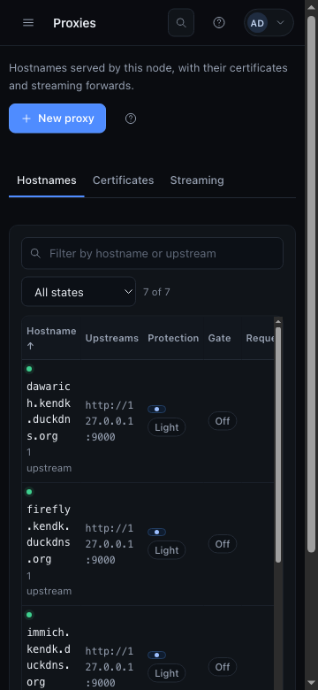
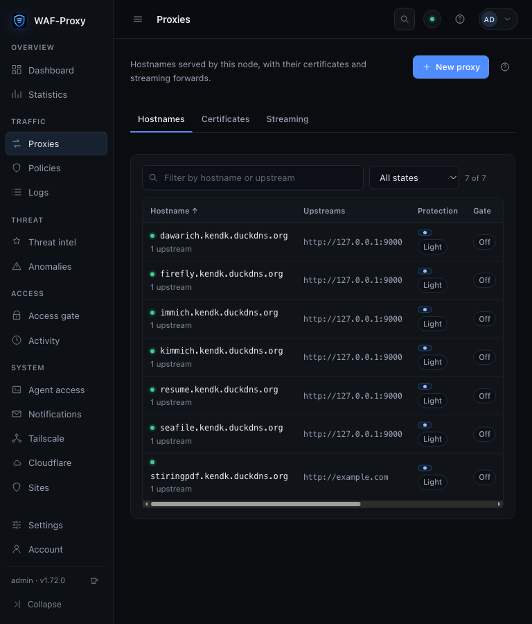
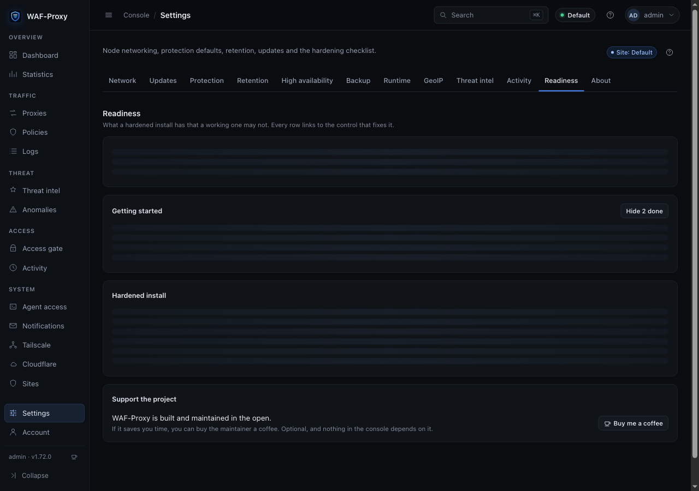
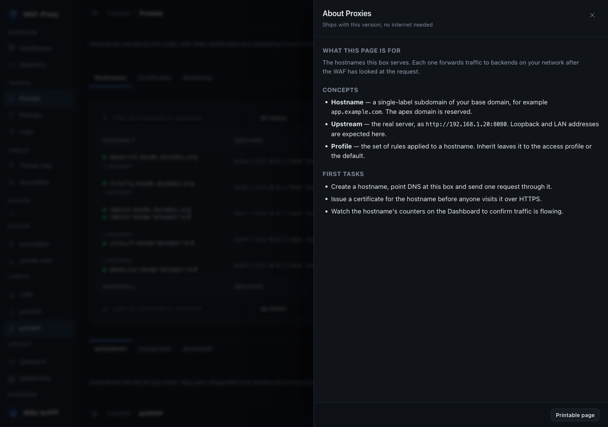

What I found with fresh eyes
The console is unusually complete and the visual language is consistent. The gaps are almost all about orientation: a new admin can see every control but not the order to use them, what "good" looks like, or what to do when a number is wrong.




The best onboarding asset is buried.
Settings → Readiness already holds a 7-step checklist with "Open Certificates" style links. It is the 11th of 12 tabs, so a new admin meets it last — if at all. Promote it to a top-level Get set up page and keep the hardening checklist where it is.
The hostname table is unreadable on a phone.
Hostnames break mid-label (dawaric / h.kendk) and the columns a new admin needs — requests, state, actions — sit off-screen behind an inner scrollbar. Switch to stacked hostname cards below 640px; keep the table from 768px up.
Every Statistics tab repeats the same two cards.
Uptime monitor and Requests over time appear above Overview, Traffic, Access-gate logins and Utilization, with an identical page description. On a phone that means scrolling past the same two blocks to reach the tab you chose. Keep them on Overview only.
Activity, High availability and Threat intel each live twice.
They are sidebar destinations and Settings tabs. Settings also carries tenant pages (GeoIP, Threat intel) beside host pages. That makes the Settings tab strip 12 wide on a tablet and leaves no single answer to "where is that setting?".
"360" means nothing on its own.
Each hostname row offers 360 and Edit. Nothing explains that 360 opens the hostname's full traffic view. Use an eye icon with a tooltip, or label it "Traffic".
Page help exists and is genuinely good — but hidden.
Every page ships offline help via a small ? in the page head, plus a printable copy and a ? keyboard shortcut. The content explains concepts well; the problem is discovery, and that it never points at the control that fixes the thing it describes.
New / Add / Create are used for the same action: "New proxy", "Add policy", "Create site", "New agent token", "Add link".
Some explain and offer a button ("Create an account"); others only explain ("No temporary bans"). None say what "good" looks like.
A new hostname can be saved with a placeholder upstream and no certificate; nothing checks DNS or reachability, and the error appears later as a 502.
Proposal 1 — "Get set up" as the third nav item
One page that answers "is this install finished, and what should I do next?". It reuses the Readiness checks, adds a plain-language reason to each, and gives every row a Verify action where the console can actually test the thing (certificate present, request logged, alert delivered).
Get this install earning its keep
Each step takes a minute. Nothing here is permanent — every setting can be changed later.
Issue a certificate so HTTPS stops warning
No certificate is stored. Until one is, every visitor sees a browser warning and the Access gate cannot be used.
Proposal 2 — turn "New proxy" into a checked three-step flow
Today the drawer opens on "Overview" with six fields, while the one field that makes the site work — the upstream — sits behind the second tab. Nothing tests reachability or DNS. The proposal keeps the same drawer and fields, but orders them around the decision a new admin is making, and adds two checks the server can already perform.
Proposal 3 — help where the confusion happens
The page help drawer already covers concepts, but it is a destination. A junior needs the definition at the field, the consequence at the toggle, and a way to jump from an explanation to the control. Three small surfaces, all fed by the existing Markdown.
Global profiles
Applied before a hostname's own profile. Higher in the list wins.
A rule that matched but did not block, because the profile is in detect mode. It is what would have been stopped under block mode.
Proposal 4 — a troubleshooting page organised by symptom
A new self-hoster does not search for "upstream health"; they search for "502". This page starts from five symptoms and walks to the cause with checks that read live state, so the answer is "no request has reached this host since 14:02" rather than "check your DNS".
The WAF let it through; the upstream did not answer.
A rule, list or geo policy is refusing good traffic.
Lost authenticator, forgotten password, locked account.
Missing, expired, or issued for the wrong name.
DNS, port forward, listener binding or a disabled host.
Retention, backup copies, log growth, event volume.
Diagrams to ship with the product
The same three diagrams belong inside the console, not only in the docs: one shows where a request can die, one shows the order of setup, one shows how to decide what is wrong.
- 1Boot the box and finish the wizardinterfaces · base domain · WAN + LAN addresses · first admin
- 2Point DNS at this hostone label under the base domain · port 443 only · Get set up
- 3Issue the certificatewildcard covers every subdomain · Certificates → Verify
- 4Add the hostname and test the upstreamNew hostname → Test (200) → preset · Hostnames
- 5Watch one request end to endLogs shows the stage and rule · Logs
- 6Make it survivable2FA, second admin, alerts, backup · Get set up
Suggested order of work
Nothing here needs a redesign. The console's layout, tokens and density hold up; these are additions to orientation and copy, plus one mobile table fix. Each proposal is independently shippable behind the existing routes.